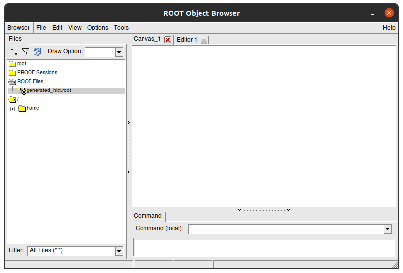
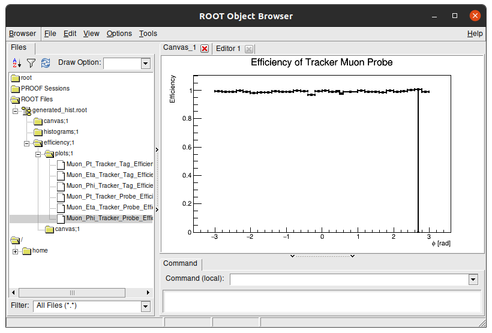
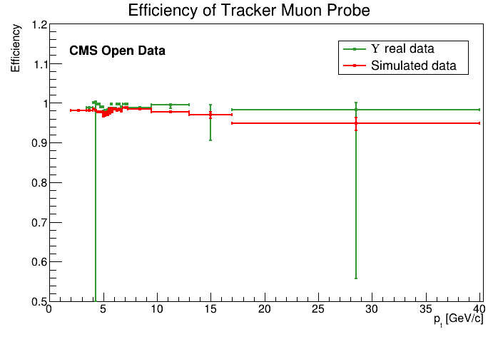
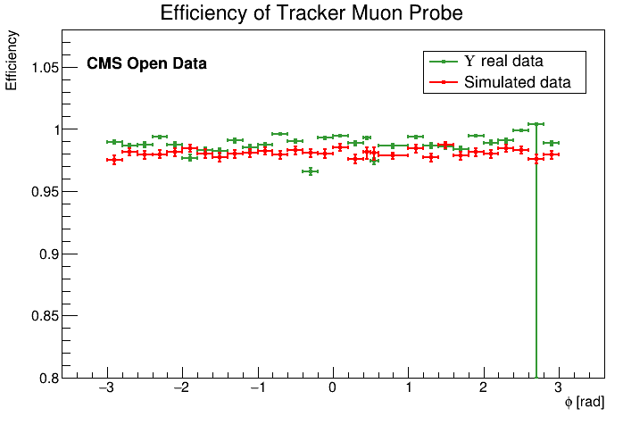
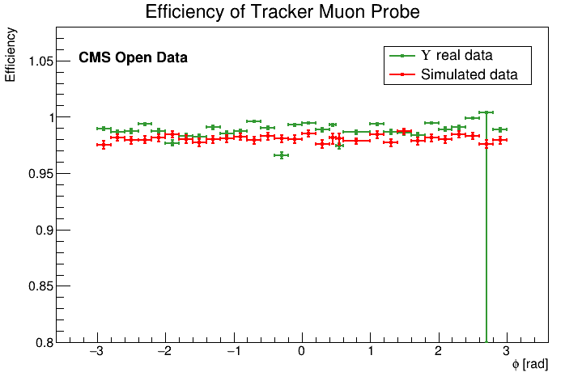
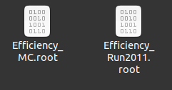
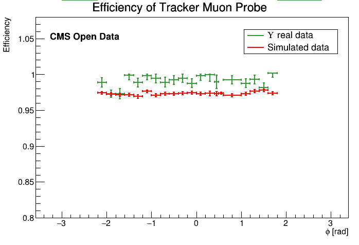
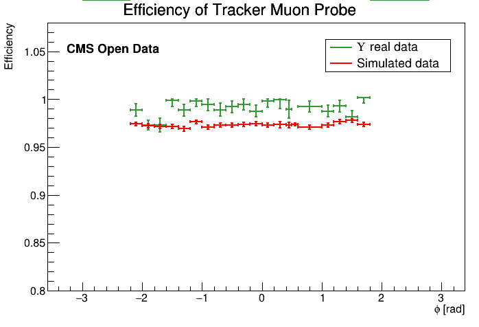

Comparison
How sideband subtraction method code stores its files¶
the Sideband subtraction code saves every efficiency plot in efficiency/plots/ folder inside a single generated_hist.root file. Lets check it!
You're probably on the main directory. Lets go back a directory.
cd ..
ls
main README.md results Run2011A_MuOnia_Upsilon.root Upsilon1SToMuMu_MC_full.root
A folder named results showed up on this folder. Lets go check its content.
cd results
ls
Comparison_Upsilon_Sideband_Run_vs_MC Upsilon_MC_2020 Upsilon_Run_2011
If you did every step of the sideband subtraction on this page lesson, these results should match with the results on your pc. Access one of those folders (except comparison).
cd Upsilon_Run_2011
ls
Efficiency_Tracker_Probe_Eta.png Tracker_Probe_Phi_All.png
Efficiency_Tracker_Probe_Phi.png Tracker_Probe_Phi_Passing.png
Efficiency_Tracker_Probe_Pt.png Tracker_Probe_Pt_All.png
Efficiency_Tracker_Tag_Eta.png Tracker_Probe_Pt_Passing.png
Efficiency_Tracker_Tag_Phi.png Tracker_Tag_Eta_All.png
Efficiency_Tracker_Tag_Pt.png Tracker_Tag_Eta_Passing.png
generated_hist.root Tracker_Tag_Phi_All.png
InvariantMass_Tracker.png Tracker_Tag_Phi_Passing.png
InvariantMass_Tracker_region.png Tracker_Tag_Pt_All.png
Tracker_Probe_Eta_All.png Tracker_Tag_Pt_Passing.png
Tracker_Probe_Eta_Passing.png
Here, all the output plots you saw when running the sideband subtraction method are stored as a .png. Aside from them, there's a generated_hist.root that stores the efficiency in a way that we can manipulate it after. This file is needed to run the comparison between efficiencies for the sideband subtraction method. Lets look inside of this file.
Run this command to open generated_hist.root with ROOT:
root -l generated_hist.root
root [0]
Attaching file generated_hist.root as _file0...
(TFile *) 0x55dca0f04c50
root [1]
Lets check its content. Type on terminal:
new TBrowser
You should see something like this:

This is a visual navigator of a .root file. Here you can see the struture of generated_hist.root. Double click the folders to open them and see their content. The Efficiency plots we see are stored in efficiency/plots/ folder:

You can double click each plot to see its content:

Tip
To close this window, click on terminal and press Ctrl + C. This command stops any processes happening in the terminal.
Key Point
- As you see, the
.rootfile has a path inside and the efficiencies plots have paths inside them as well!
Comparison results between real data and simulations for sideband method¶
After runinng the sideband subtraction code, we get a .root with all the efficiencies plots inside it in two different folders:
../results/Upsilon_Run_2011/generated_hist.root../results/Upsilon_MC_2020/generated_hist.root
We'll get back to this on the discussion below.
Head back to the main folder. Inside of it there is a code for the efficiency plot comparison. Lets check it out.
cd main
ls
classes compare_efficiency.cpp config macro.cpp
There is it. Now lets open it.
gedit compare_efficiency.cpp
Its easy to prepare it for the sideband subtraction comparison. Our main editing point can be found in this part:
//CONFIGS
int useScheme = 0;
//Jpsi Sideband Run vs Jpsi Sideband MC
//Jpsi Fitting Run vs Jpsi Fitting MC
//Jpsi Sideband Run vs Jpsi Fitting Run
//Upsilon Sideband Run vs Upsilon Sideband MC
//Upsilon Fitting Run vs Upsilon Fitting MC
//Upsilon Sideband Run vs Upsilon Fitting Run
//Muon id analyze
bool doTracker = true;
bool doStandalone = true;
bool doGlobal = true;
Note
In the scope above we see:
int useSchemerepresents which comparison you are doing.bool doTrackeris a variable that allow plots for tracker muons.bool doStandaloneis a variable that allow plots for standalone muons.bool doGlobalis a variable that allow plots for global muons.
Everything is up to date to compare sideband subtraction's results between real data and simulations, except it is comparing standalone and global muons. As we are looking for tracker muons efficiencies only, you should switch to false variables for Standalone and Global.
Also, you will need to change the useScheme variable to plot what you want to plot. As we want to plot efficiency of real data and simulated data, the value has to be 3.
See result scructure
If you deleted the right lines, your code now should be like this:
//CONFIGS
int useScheme = 3;
//Jpsi Sideband Run vs Jpsi Sideband MC
//Jpsi Fitting Run vs Jpsi Fitting MC
//Jpsi Sideband Run vs Jpsi Fitting Run
//Upsilon Sideband Run vs Upsilon Sideband MC
//Upsilon Fitting Run vs Upsilon Fitting MC
//Upsilon Sideband Run vs Upsilon Fitting Run
//Muon id analyze
bool doTracker = true;
bool doStandalone = false;
bool doGlobal = false;
Let your variables like this.
Now you need to run the code. To do this, save the file and type on your terminal:
root -l compare_efficiency.cpp
If everything went well, the message you'll see in terminal at end of the process is:
Use Scheme: 3
Done. All result files can be found at "../results/Comparison_Upsilon_Sideband_Run_vs_MC/"
Note
The command above to run the code will display three new windows on your screen with comparison plots. You can avoid them by running straight the command below.
root -l -b -q compare_efficiency.cpp
In this case, to check it results you are going to need go for result folder (printed on code run) and check images there by yourself. You can try to run TBrowser again:
cd [FOLDER_PATH]
root -l
new TBrowser
And as output plots comparsion, you get:

 

Now you can type the command below to quit root and close all created windows:
.q
How fitting method code stores its files¶
To do the next part, first you need to understand how the fitting method code saves its files in a different way to the sideband subtraction method code. Lets look at how they are saved.
If you look inside CMS-tutorial\Efficiency Result folder, where is stored fitting method results, you will see another folder named trackerMuon. Inside of it you'll see:
Inside of them, there are two files:

If you go with your terminal to this folder and run this command, you'll see that the result files only have one plot.\
root -l Efficiency_Run2011.root
root [0]
Attaching file Efficiency_Run2011.root as _file0...
(TFile *) 0x55f7152a8970
root [1]
Now lets look at its content. Type on terminal:
new TBrowser
It has only one plot, because the others are in different files.

Key Point
- There is a
.rootfile for each efficiency plot created with the fitting method.
Comparison results between real data and simulations for fitting method¶
Go back to the main folder.
cd main
ls
classes compare_efficiency.cpp config macro.cpp
Open compare_efficiency.cpp again
gedit compare_efficiency.cpp
This is how your code should look like now:
//CONFIGS
int useScheme = 3;
//Jpsi Sideband Run vs Jpsi Sideband MC
//Jpsi Fitting Run vs Jpsi Fitting MC
//Jpsi Sideband Run vs Jpsi Fitting Run
//Upsilon Sideband Run vs Upsilon Sideband MC
//Upsilon Fitting Run vs Upsilon Fitting MC
//Upsilon Sideband Run vs Upsilon Fitting Run
//Muon id analyze
bool doTracker = true;
bool doStandalone = false;
bool doGlobal = false;
const char* fit_run_upsilon[][2] = {
{"../../fitting/Efficiency Result/Tracker/Pt/Efficiency_Run2011.root", "Efficiency"},
{"../../fitting/Efficiency Result/Tracker/Eta/Efficiency_Run2011.root", "Efficiency"},
{"../../fitting/Efficiency Result/Tracker/Phi/Efficiency_Run2011.root", "Efficiency"},
{"../../fitting/Efficiency Result/Standalone/Pt/Efficiency_Run2011.root", "Efficiency"},
{"../../fitting/Efficiency Result/Standalone/Eta/Efficiency_Run2011.root", "Efficiency"},
{"../../fitting/Efficiency Result/Standalone/Phi/Efficiency_Run2011.root", "Efficiency"},
{"../../fitting/Efficiency Result/Global/Pt/Efficiency_Run2011.root", "Efficiency"},
{"../../fitting/Efficiency Result/Global/Eta/Efficiency_Run2011.root", "Efficiency"},
{"../../fitting/Efficiency Result/Global/Phi/Efficiency_Run2011.root", "Efficiency"}
};
const char* fit_mc_upsilon[][2] = {
{"../../fitting/Efficiency Result/Tracker/Pt/Efficiency_MC.root", "Efficiency"},
{"../../fitting/Efficiency Result/Tracker/Eta/Efficiency_MC.root", "Efficiency"},
{"../../fitting/Efficiency Result/Tracker/Phi/Efficiency_MC.root", "Efficiency"},
{"../../fitting/Efficiency Result/Standalone/Pt/Efficiency_MC.root", "Efficiency"},
{"../../fitting/Efficiency Result/Standalone/Eta/Efficiency_MC.root", "Efficiency"},
{"../../fitting/Efficiency Result/Standalone/Phi/Efficiency_MC.root", "Efficiency"},
{"../../fitting/Efficiency Result/Global/Pt/Efficiency_MC.root", "Efficiency"},
{"../../fitting/Efficiency Result/Global/Eta/Efficiency_MC.root", "Efficiency"},
{"../../fitting/Efficiency Result/Global/Phi/Efficiency_MC.root", "Efficiency"}
};
You have to do two things:
-
Edit
int useSchemevalue to current analysis. -
Delete all
Tracker/of folder from paths inconst char* fit_run_upsilon[][2]andconst char* fit_mc_upsilon[][2].
We need to delete the path Tracker/ because the fitting code does not separate in Tracker, Standalone and Global Folder atuomatically. So, as we will not do this manually, just remove the folder from path which we will analyze.
In the end of task, your code should be something like this:
//CONFIGS
int useScheme = 4;
//Jpsi Sideband Run vs Jpsi Sideband MC
//Jpsi Fitting Run vs Jpsi Fitting MC
//Jpsi Sideband Run vs Jpsi Fitting Run
//Upsilon Sideband Run vs Upsilon Sideband MC
//Upsilon Fitting Run vs Upsilon Fitting MC
//Upsilon Sideband Run vs Upsilon Fitting Run
//Muon id analyze
bool doTracker = true;
bool doStandalone = false;
bool doGlobal = false;
const char* fit_run_upsilon[][2] = {
{"../../fitting/Efficiency Result/Pt/Efficiency_Run2011.root", "Efficiency"},
{"../../fitting/Efficiency Result/Eta/Efficiency_Run2011.root", "Efficiency"},
{"../../fitting/Efficiency Result/Phi/Efficiency_Run2011.root", "Efficiency"},
{"../../fitting/Efficiency Result/Standalone/Pt/Efficiency_Run2011.root", "Efficiency"},
{"../../fitting/Efficiency Result/Standalone/Eta/Efficiency_Run2011.root", "Efficiency"},
{"../../fitting/Efficiency Result/Standalone/Phi/Efficiency_Run2011.root", "Efficiency"},
{"../../fitting/Efficiency Result/Global/Pt/Efficiency_Run2011.root", "Efficiency"},
{"../../fitting/Efficiency Result/Global/Eta/Efficiency_Run2011.root", "Efficiency"},
{"../../fitting/Efficiency Result/Global/Phi/Efficiency_Run2011.root", "Efficiency"}
};
const char* fit_mc_upsilon[][2] = {
{"../../fitting/Efficiency Result/Pt/Efficiency_MC.root", "Efficiency"},
{"../../fitting/Efficiency Result/Eta/Efficiency_MC.root", "Efficiency"},
{"../../fitting/Efficiency Result/Phi/Efficiency_MC.root", "Efficiency"},
{"../../fitting/Efficiency Result/Standalone/Pt/Efficiency_MC.root", "Efficiency"},
{"../../fitting/Efficiency Result/Standalone/Eta/Efficiency_MC.root", "Efficiency"},
{"../../fitting/Efficiency Result/Standalone/Phi/Efficiency_MC.root", "Efficiency"},
{"../../fitting/Efficiency Result/Global/Pt/Efficiency_MC.root", "Efficiency"},
{"../../fitting/Efficiency Result/Global/Eta/Efficiency_MC.root", "Efficiency"},
{"../../fitting/Efficiency Result/Global/Phi/Efficiency_MC.root", "Efficiency"}
};
Doing this and running the program with:
root -l compare_efficiency.cpp
Should get you these results:

 

Now you can type the command below to quit root and close all created windows:
.q
Comparison results between data from the sideband and data from the fitting method¶
Challenge
Using what you did before, try to mix them and plot a comparison between real data for sideband method and real data for sthe fitting method and get an analysis. Notice that:
- Real data = Run 2011
- Simulations = Monte Carlo = MC
Tip: you just need to change what you saw in this page to do this comparison.
Extra challenge
As you did with the last 2 extras challenges, try to redo this exercise comparing results between challenges.
Extra - recreate ntuples
If you are looking go far than this workshop, you can try to recreate those ntuples we used here. Try to get results from a J/ψ decaying in dimuons ntuple @7 TeV. The code used to create them can be found here.
Concerning the datasets used to produce these extra exercises, you can find them in these links below:
This is work in progress adapted from CMS official code to create CMS Open Data Tag and Probe ntuples.